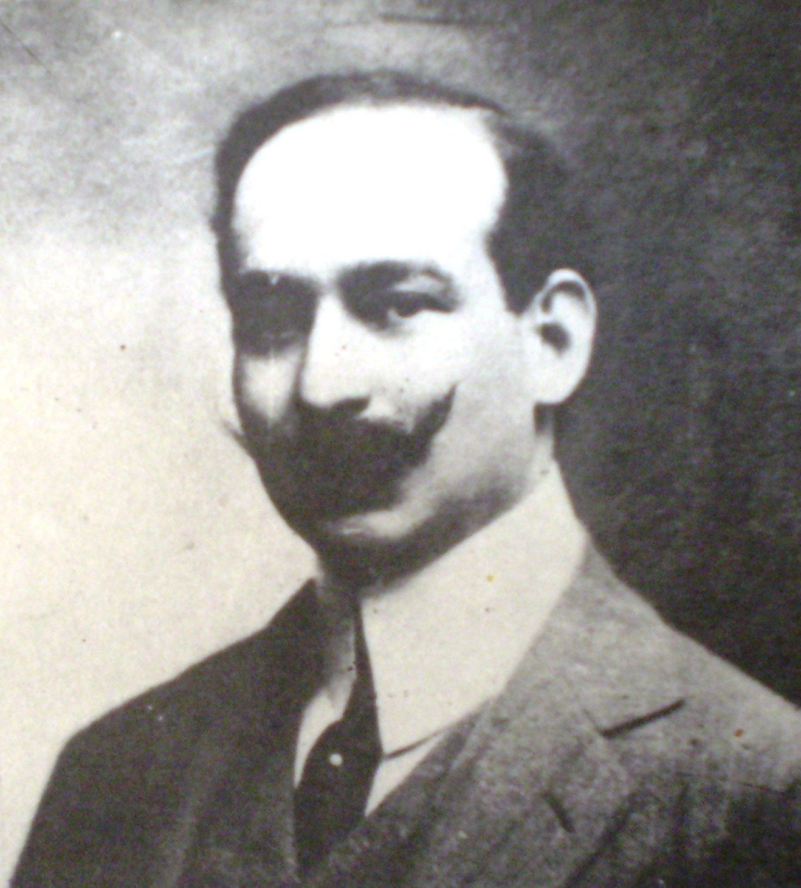

| 
|
José Ingenieros
Filósofo y médico argentino. Profesor Universidad de
Buenos
Aires.
Estudió medicina en la Universidad de Buenos Aires, y fue profesor de psicología experimental en
esa
universidad. Está considerado como uno de los máximos representantes del positivismo en
latinoamérica.
Escribió su tesis doctoral, La simulación en la lucha por la vida (1903), en clara consonancia
con la
corriente darwinista que prevalecía en Argentina por aquella época. A ese respecto, y como
miembro del
Partido Socialista, defendió también la idea de que la lucha de clases era una de las múltiples
manifestaciones de la lucha por la vida.
|